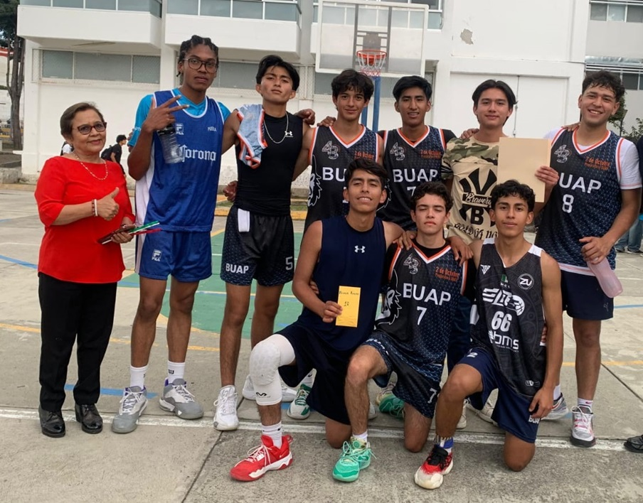
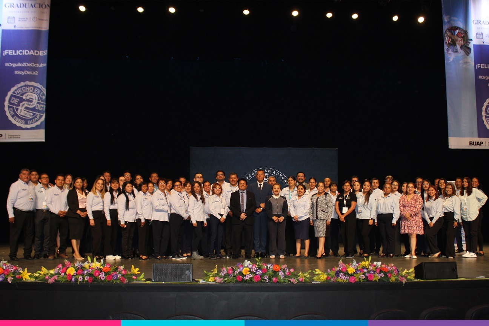

Mi trayectoria con la comunidad estudiantil.
Siempre comprometida con cada uno de las y los estudiantes de nuestra unidad academica
Empatía y liderazgo con las y los estudiantes
Muestra empatía y liderazgo guiando a los estudiantes con sensibilidad para desarrollar su resiliencia.

Apoyando y promoviendo el deporte en la preparatoria
Apoya el deporte mediante torneos y campañas que incentivan la salud y el trabajo en equipo de la comunidad estudiantil y personal docente.

Unidad de género para construir un ambiente de igualdad
Promueve la igualdad de género con talleres que crean un entorno inclusivo y respetuoso para todos.
Participación en eventos culturales
Se involucra en festivales culturales para enriquecer la educación y promover la tolerancia.
Promoviendo la lectura para mejorar calidad educativa
Fomenta la lectura a través de clubes que mejoran habilidades lingüísticas y amplían perspectivas.

Equipo de trabajo y compañerismo para eventos
Fomenta el compañerismo en graduaciones mediante comités que fortalecen los lazos y la motivación grupal.